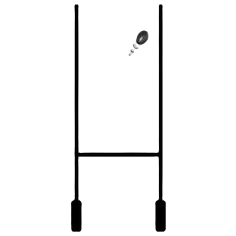

  
  @keyframes Moveimg{
    2%{left:2mm; margin-bottom: 1mm;}
    4%{left:3mm; margin-bottom: 2mm}
    6%{left:4mm; margin-bottom: 3mm}
    8%{left:5mm; margin-bottom: 4mm}
    10%{left:6mm; margin-bottom: 5mm}
    12%{left:7mm; margin-bottom: 6mm}
    14%{left:8mm; margin-top: -54mm}
    16%{color: black;}
    18%{color: black;}
    20%{color: black;}
    22%{color: black;}
    24%{color: black;}
    26%{color: black;}
    28%{color: black;}
    30%{color: black;}
    32%{color: black;}
    34%{color: black;}
    36%{color: black;}
    38%{color: black;}
    40%{color: black;}
    42%{color: black;}
    44%{color: black;}
    46%{color: black;}
    48%{color: black;}
    50%{color: black;}

}


img.footer{
    animation-name: Moveimg;
  animation-duration: 10s;
}  position: relative;


